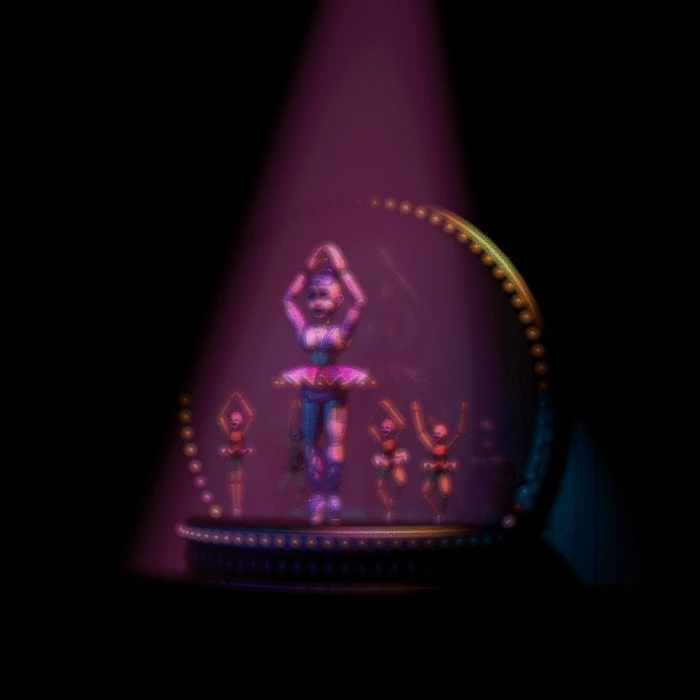

Use of a mark in Bootstrap
Use ctrl + p to open the Print dialog box
Ballora is a major antagonist and ballerina dancer animatronic who first appeared in Five Nights at Freddy's: Sister Location, where she entertains at her own gallery room from the west of Circus Baby's Entertainment and Rental.
Circus Baby (commonly referred to as Baby) is the secondary antagonist of the Five Nights at Freddy's franchise and the animatronic mascot of Circus Baby's Pizza World invented by Afton Robotics, LLC and made for Fazbear Entertainment, Inc. Baby is haunted by the soul of Elizabeth Afton, who was the daughter of the serial killer William Afton. However, during the completion ending, Elizabeth's soul was presumably set free.
Funtime Foxy is one of the seven animatronics (twelve if the Custom Night animatronics are counted) and an antagonist in Five Nights at Freddy's: Sister Location. They are a circus-themed version of Foxy. They are also one of the entertainers of the Funtime Auditorium (which is located to the east of Circus Baby's Entertainment and Rental), the other being Funtime Freddy (although he isn't seen in the auditorium).

Funtime Freddy is a major antagonist who first appeared in Five Nights at Freddy's: Sister Location as the titular antagonist. He is a circus-themed version of Freddy Fazbear. He is also one of the entertainers from the Funtime Auditorium, which is located from the east of Circus Baby's Entertainment and Rental (although he isn't seen in the said auditorium). The other being Funtime Foxy.